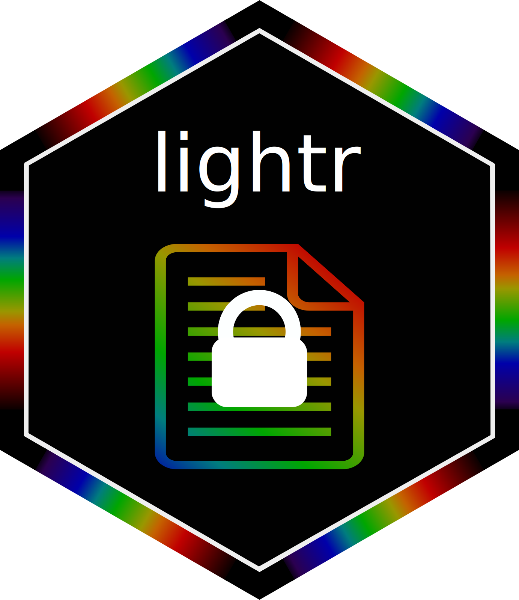

Authors and Citation
Authors
-
Hugo Gruson. Maintainer, author, copyright holder.
-
Thomas White. Author, copyright holder.
-
Kotya Karapetyan. Contributor, copyright holder.
Author of the MATLAB script to read AvaSoft7 binary files (CC-BY)
Citation
Source: inst/CITATION
Gruson H, White T, Maia R (2019). “lightr: import spectral data and metadata in R.” Journal of Open Source Software, 4(43), 1857. doi:10.21105/joss.01857, https://doi.org/10.21105/joss.01857.
@Article{,
doi = {10.21105/joss.01857},
url = {https://doi.org/10.21105/joss.01857},
year = {2019},
publisher = {The Open Journal},
volume = {4},
number = {43},
pages = {1857},
author = {Hugo Gruson and Thomas White and Rafael Maia},
title = {lightr: import spectral data and metadata in R},
journal = {Journal of Open Source Software},
}